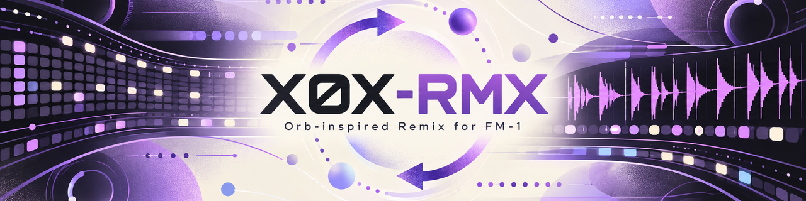
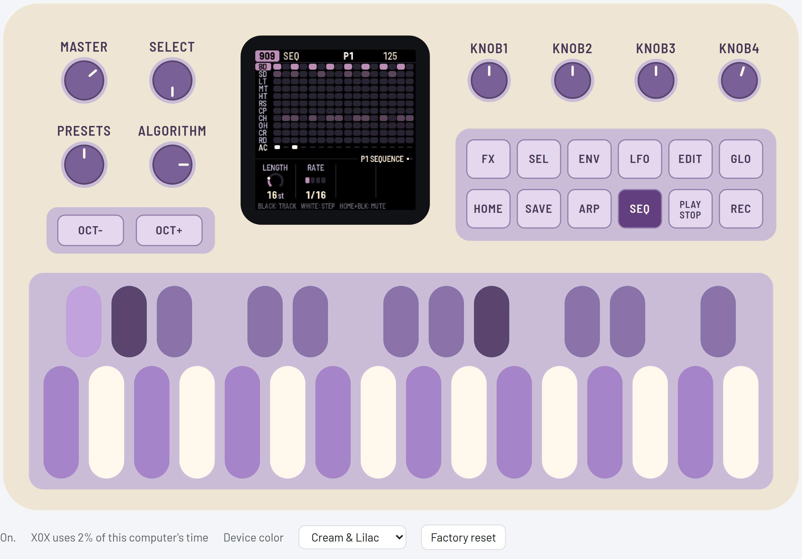
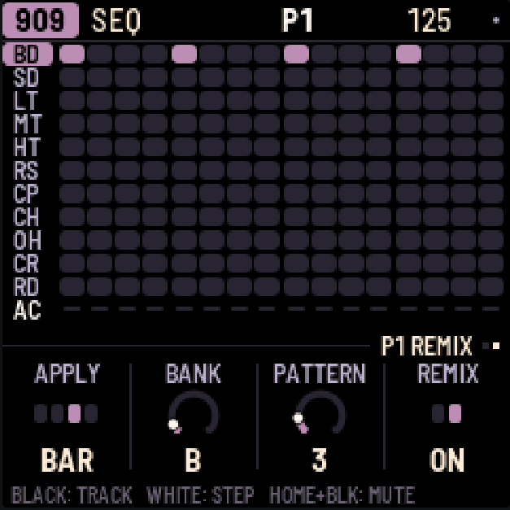
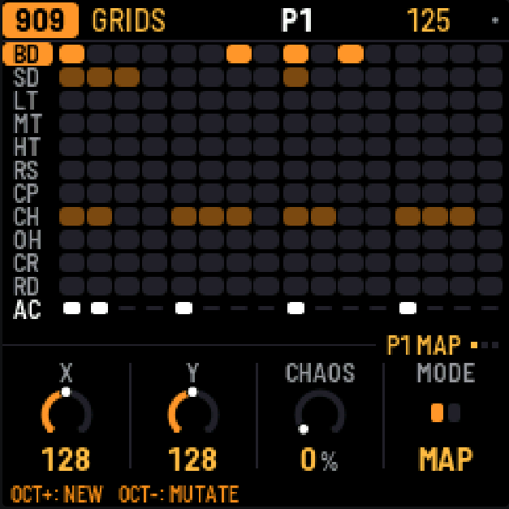
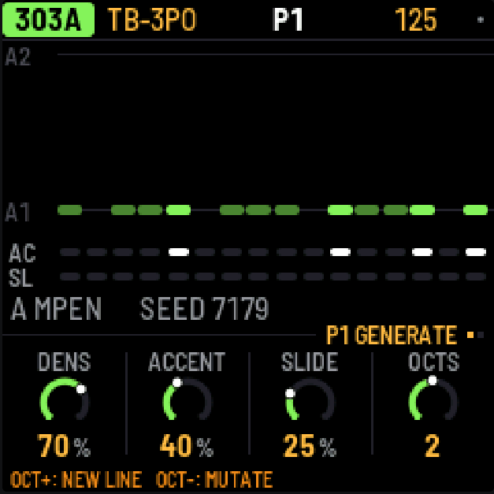
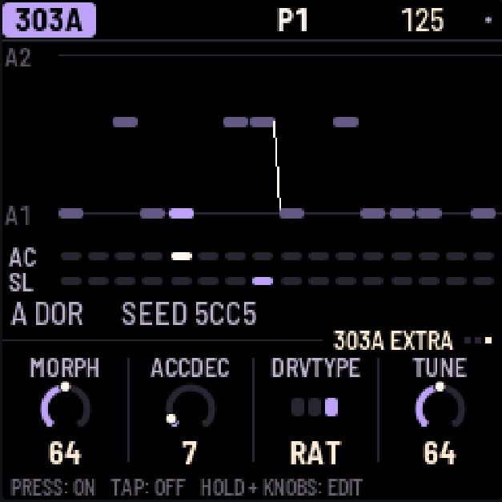
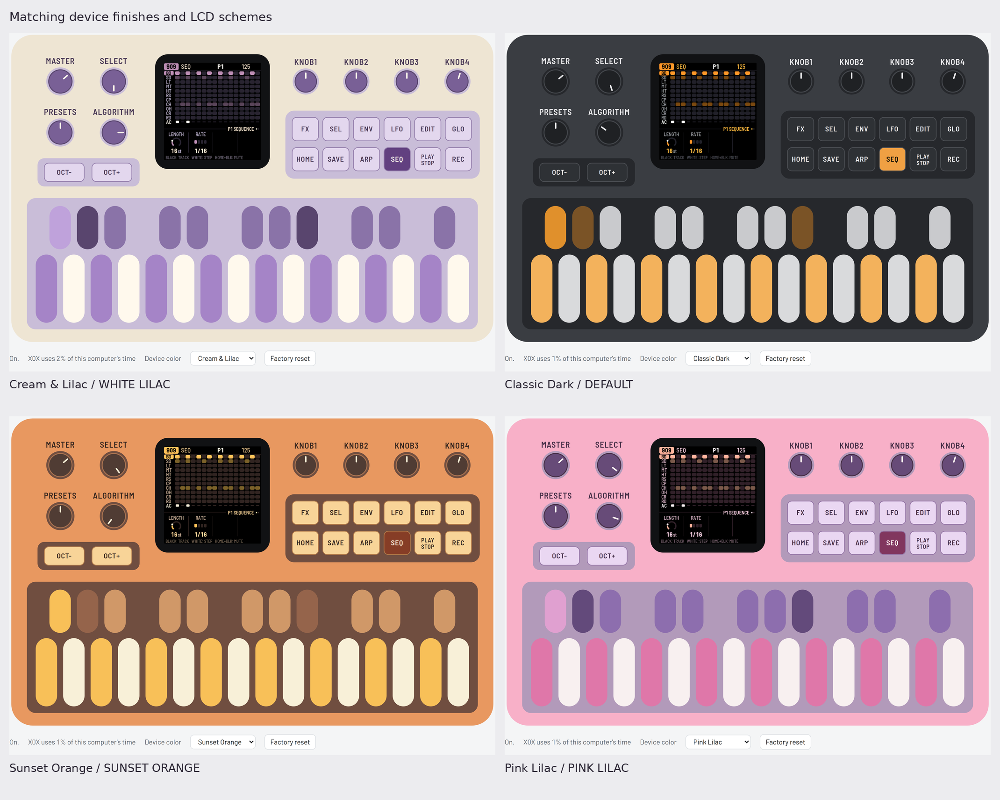

Groovebox firmware for the M-VAVE FM-1. A 909, an 808, two 303s with the TB-3PO line generator, and a breakbeat player, all running at once, with patterns, a song mode and recorded knob moves. This independent fork adds Orb-inspired Remix for 909, 808, 303A and 303B, Grids MAP/EUCLID drum generation with NEW/MUTATE, FILL, OFFSET, CHAOS and Undo, extended TB-3PO, a 303 Morph waveform, and additional color schemes and UI improvements.

X0X-RMX musical demonstration
Inside X0X-RMX




Four emulator device colors
Choose Cream & Lilac (default), Classic Dark, Sunset Orange or Pink Lilac with the browser's Device color selector. Switching is immediate and the visual preference is remembered separately from your project. GLO → SCHEME controls LCD colors independently.

Original X0X – upstream demonstration
Original X0X demonstration by Charles Vestal; it does not demonstrate the fork additions.
Based on Charles Vestal's original X0X and Felucca by Leo Kuroshita and contributors, Hügelton Instruments. Grids by Emilie Gillet / Mutable Instruments; MAP arithmetic cross-checked against DEADACTIVE's Hortator. See the complete credits and licensing notices.
An independent fork without implied endorsement by the original author. M-VAVE, FM-1, TR-808, TR-909 and TB-303 are trademarks of their owners; no affiliation or endorsement.